Lecture 10: SLAM, Navigation2 & the Simulated Capstone Mission
This session absorbs what used to be three separate three-hour lectures — SLAM mapping, Nav2 navigation, and the capstone mission — into one extended lab, because the three problems they solve (build a map, navigate it, run a full mission on top of it) only really make sense as one continuous story. Expect this to be the longest and densest session in the course; plan to split it across two lab days if you need to, with natural break points at the end of Section 10.7 (map saved) and the end of Section 10.15 (Nav2 driving to goals). And treat everything below as the simulated dress rehearsal for the real-hardware capstone mission that now lives at the very end of the course, in Lecture 14 — where you'll run this same kind of mission for real, on Forge, a robot you build from raw components yourself.
10.1The chicken-and-egg problem SLAM solves
In Lecture 9 you gave LIMO a finished map and asked AMCL a comparatively easy question: given this known map and these LiDAR scans, where on the map am I? That's a hard problem in its own right, but it has a huge advantage — the map already exists as ground truth to match against.
Today you have neither. You wheel LIMO into a lab it has never seen, with no map.pgm anywhere
on disk, and no idea what the walls even look like. Worse, you also don't know LIMO's own pose in that
space, because "pose in the space" only means something once a map exists to be a pose in. This
is the classic chicken-and-egg problem of mobile robotics:
To localize accurately, you need a map. To build an accurate map, you need to know where the robot was standing when it took each scan. Neither can be solved first — each depends on the answer to the other. SLAM (Simultaneous Localization And Mapping) is the family of algorithms that breaks this deadlock, not by solving both problems perfectly from scratch, but by solving them incrementally and jointly, letting partial answers to each bootstrap the other.
The trick is to never try to localize against the "final" map, because there isn't one yet — only the map built so far. Each new LiDAR scan is compared (scan-matched) against whatever partial map already exists, which is usually good enough to estimate how far and which way the robot moved since the last scan. That small motion estimate lets the map be extended a little further. Repeat this thousands of times per drive and a full occupancy grid emerges — one scan at a time, each one leaning on the partially-built work of all the scans before it.
There's a catch: small scan-matching errors accumulate. Drive LIMO in a long loop around the lab and, by the time it returns to its starting corner, the map might show two overlapping copies of that corner instead of one, because dead-reckoning drift piled up along the way. SLAM's answer to this is loop closure: recognizing "I have been here before" and using that recognition to correct the accumulated drift across the entire map at once, not just the most recent scan. That global correction step operates on a data structure called the pose graph — a graph where nodes are robot poses at each scan and edges are the relative-motion constraints between them (both the scan-to-scan ones and, once found, the loop-closure ones).
/scan"] --> B["Scan-match against
the map built so far"] B --> C["Estimate motion
since the last scan"] C --> D["Add node + constraint
to the pose graph"] D --> E["Extend / update the
occupancy grid"] E --> F{"Does this scan
match an old, already-
mapped area?"} F -- "no — new territory" --> A F -- "yes — loop closure!" --> G["Global pose-graph
optimization: correct
drift across the whole map"] G --> E style B fill:#eef0ff,stroke:#3d4bf5,color:#211f1a,font-weight:bold style D fill:#f4effe,stroke:#8b5cf6,color:#211f1a style G fill:#eafaf3,stroke:#0e9e6e,color:#211f1a,font-weight:bold
AMCL (Lecture 9) assumes the map is frozen ground truth and only ever updates a probability cloud of candidate poses. SLAM has no such luxury — the map itself is a moving target, being rewritten scan by scan. That's why SLAM needs the extra machinery of a pose graph and loop closure: without a way to go back and fix earlier map cells when new evidence arrives, small errors would compound into a badly warped map with no path to correct them.
10.2slam_toolbox: the package this course runs
This course standardizes on slam_toolbox, the most widely deployed 2D LiDAR
SLAM package in the ROS 2 ecosystem. Install it if it isn't already on your workstation and the LIMO's
onboard computer:
sudo apt install ros-humble-slam-toolbox
slam_toolbox ships several node executables for different situations. The one you'll run
today is async_slam_toolbox_node — the online, real-time mapping node.
| Node | Mode | When you use it |
|---|---|---|
async_slam_toolbox_node | Online, asynchronous | Driving LIMO around live and watching the map build in RViz2 — today's lab |
sync_slam_toolbox_node | Online, synchronous | Rare — when every single scan must be processed with nothing dropped, at the cost of possibly lagging behind real time |
| (offline tools) | Post-processing | Replaying a recorded rosbag after the fact to build or refine a map without a live robot |
async_slam_toolbox_node processes incoming scans on its own schedule and is explicitly
allowed to skip a scan if it's still busy with the previous one, rather than blocking the rest of the
ROS graph until it catches up. That trade-off is exactly right for a robot you're actively driving:
odometry, TF, and teleop control must keep flowing smoothly in real time, and losing an occasional scan
costs you almost nothing because the next one arrives a fraction of a second later. The synchronous node
exists for cases — mostly offline bag processing — where dropping frames is unacceptable and lag is
fine.
You'll sometimes see other robotics courses and industrial stacks use Google Cartographer
instead — its ROS 2 nodes are cartographer_node (the SLAM backend itself) and
cartographer_occupancy_grid_node (which converts Cartographer's internal submaps into the
familiar nav_msgs/OccupancyGrid you see in RViz2). Cartographer is a capable, production-grade
SLAM system, but it's configured through a Lua scripting file with a steeper learning curve than a plain
ROS 2 YAML parameter file.
Two reasons drove the choice: slam_toolbox is configured with the same
ros__parameters YAML style you already know from every other node in this course (no new
language to learn), and it integrates tightly with Nav2 out of the box — the same map-lifecycle
conventions you'll rely on later in this session. Cartographer remains an excellent choice in industry,
especially for large-scale or multi-sensor mapping, and it's worth knowing it exists — but for a LIMO in
a single lab room, slam_toolbox gets you there with less configuration overhead.
10.3Setting up the SLAM launch
This course wraps async_slam_toolbox_node inside its own launch file,
limo_slam.launch.py, which lives in the limo_localisation package alongside the
AMCL launch file you used in Lecture 9. It loads a parameter file — slam.yaml — that you
write and tune for this lab's geometry and LIMO's LiDAR.
# limo_localisation/config/slam.yaml
slam_toolbox:
ros__parameters:
use_sim_time: true
mode: mapping
scan_topic: /scan
base_frame: base_footprint
odom_frame: odom
map_frame: map
resolution: 0.05
max_laser_range: 8.0
minimum_travel_distance: 0.2
minimum_travel_heading: 0.2
map_update_interval: 2.0
do_loop_closing: true
transform_publish_period: 0.02Three parameter groups matter most for the map you're about to build:
| Parameter | Role | Trade-off |
|---|---|---|
resolution | Size of one occupancy-grid cell, in meters per pixel | Finer (smaller) resolution captures more detail — thin table legs, doorframes — but costs more memory and compute, and is more sensitive to LiDAR noise, since fewer scan points land in each tiny cell |
max_laser_range | How far a scan return is trusted for mapping purposes | Set too far and noisy long-range returns pollute the map with stray occupied cells; set too short and you throw away real structure LIMO's LiDAR can actually see |
minimum_travel_distance / minimum_travel_heading | How far LIMO must move (meters) or turn (radians) before a new scan is fed into the map update | Lower values update the map more often — smoother, denser coverage — at the cost of more compute; higher values are cheaper but can miss detail if LIMO moves in bigger jumps between updates |
Think of slam.yaml as telling async_slam_toolbox_node two different kinds of
things: which TF frames and topics to listen to (scan_topic, base_frame,
odom_frame, map_frame — the same REP-105 names from Lecture 5), and how
aggressively to spend compute building the map (resolution, the
minimum_travel_* thresholds, map_update_interval). Get the frame names wrong
and nothing appears in RViz2 at all; get the compute knobs wrong and you get a map, just a worse one.
Launch the pieces in order, each in its own terminal:
Open RViz2, set the Fixed Frame to map, and add displays for
Map (topic /map), LaserScan, RobotModel, and
TF. Right now you should see a gray, mostly empty grid with LIMO's model sitting in the
middle of it — nothing has been explored yet.
10.4Driving the map into existence
With Gazebo and limo_slam.launch.py both running, open a third terminal and take manual
control:
ros2 run teleop_twist_keyboard teleop_twist_keyboard
Now drive. Watch RViz2 as you go: every time LIMO crosses its minimum_travel_distance or
minimum_travel_heading threshold, a new scan gets folded into the map, and you'll see the
gray "unknown" cells resolve into crisp white free space and black obstacle outlines a little further out
along your path.
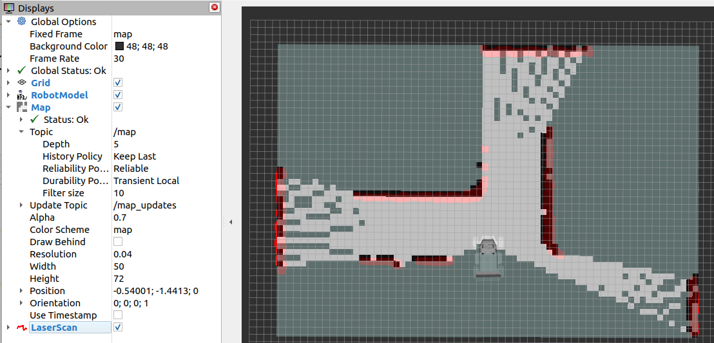
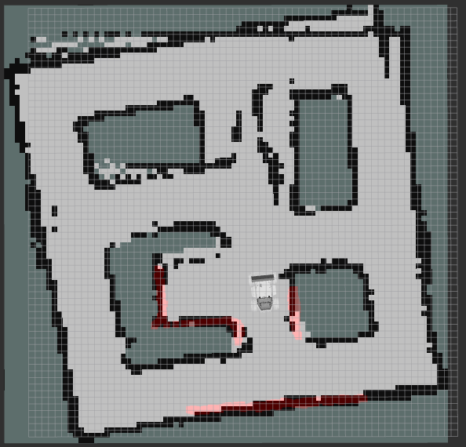
It's tempting to stop as soon as the room you started in looks fully mapped. Push further — drive down every corridor, into every side room, around every obstacle cluster you plan to navigate near later. Any cell that's still gray when you save the map stays permanently unknown to Nav2's costmap later in this session, which either blocks paths that should be legal or, worse, lets the planner route through space it never actually verified as free.
Recall from Lecture 9 what the three occupancy-grid colors mean — the semantics don't change just because you're building the map instead of localizing against one:
| Color in RViz2 | Meaning |
|---|---|
| White | Free space — a LiDAR beam passed through this cell and hit nothing |
| Black | Obstacle — a LiDAR beam terminated at this cell repeatedly |
| Gray | Unknown / unexplored — no scan has crossed this cell yet |
The physical LIMO's onboard 2D LiDAR has a genuinely limited range and a narrower field of view than the
idealized sensor in Gazebo, and it will happily return noisy points off reflective whiteboards or glass.
Expect to drive more slowly and closer to obstacles on the real robot than in simulation to get clean
scan matches, and expect max_laser_range to need retuning downward from whatever worked in
the simulated lab. Lecture 11's hardware deep-dive covers exactly this real-vs-simulated LiDAR gap.
10.5map→odom during SLAM vs. AMCL
Back in Lecture 5 you learned the REP-105 TF chain that every ROS 2 navigation stack relies on:
map → odom → base_link. odom → base_link
comes from wheel/IMU odometry and drifts slowly but continuously. The map → odom
transform is the correction term that snaps that drifting odometry frame back onto ground truth — and
crucially, exactly one node owns the right to publish it at any given time.
Right now, while async_slam_toolbox_node is running, it is the node publishing
map → odom — computed from its own scan-matching and pose-graph optimization.
Once you're happy with the finished map and save it (next section), you stop SLAM and hand that same TF
slot to AMCL, which you already built in Lecture 9. AMCL then publishes map →
odom going forward, computed from particle-filter localization against the now-frozen map
instead of live mapping. Nav2, later in this session, doesn't care which of the two produced the
transform — it simply consumes whichever one is currently running.
This gives the course's overall workflow a clean two-phase shape:
| Phase | Where | Who owns map→odom | Map status |
|---|---|---|---|
| 1. Build the map | This session, Sections 10.1-10.7 — SLAM | async_slam_toolbox_node | Being actively constructed and corrected |
| 2. Localize on the map | Lecture 9 (learned first, used here second) — AMCL | amcl node | Frozen — loaded from the saved map.pgm/map.yaml |
| 3. Navigate | This session, Sections 10.8 onward — Nav2 | Whichever of the two is active | Consumed by planners and costmaps either way |
Note the pedagogical ordering versus the operational ordering: you learned AMCL first, in Lecture 9, because it's the simpler of the two problems to reason about (map is a known constant). Operationally, though, SLAM always runs first on a brand-new space — there is no map for AMCL to localize against until a SLAM run like today's produces one.
10.6Saving the map
Once you've driven the full lab and every area you care about has resolved to white or black in RViz2, save the map with Nav2's map-saving CLI tool — the same one referenced in Lecture 9:
ros2 run nav2_map_server map_saver_cli -f mapThis writes two files into your current working directory:
| File | Content |
|---|---|
map.pgm | The grayscale raster image itself — white pixels for free space, black for obstacles, gray for unknown |
map.yaml | Metadata: resolution, origin, and the relative path back to map.pgm, plus the occupied_thresh/free_thresh values that turn grayscale pixels back into occupied/free/unknown when the map is reloaded |
Move this map.pgm / map.yaml pair into the maps/ directory of the
package your Lecture 9 AMCL launch file already expects — typically
limo_localisation/maps/ — so the rest of this session can point straight at it without you
having to edit any launch arguments.
Open the fresh map.yaml and confirm resolution matches what you set in
slam.yaml, and that image: points at map.pgm sitting alongside it
(a relative path, not an absolute one from your home directory — it needs to still resolve after you
move both files into the package).
10.7Getting a GOOD map
A map that merely exists isn't the same as a map that's useful. Three habits separate a clean map from a torn, drifted one — and all three cost you nothing but a little patience during the drive.
Scan matching works by comparing consecutive LiDAR scans and assuming the overlap between them is large enough to find a confident alignment. Fast translation or a fast in-place spin shrinks that overlap — in the worst case the algorithm can't find a match at all, or worse, matches confidently to the wrong alignment. Either way the symptom in RViz2 is the same: walls appear torn, duplicated, or offset from themselves by a few centimeters where the mismatch occurred. Treat fast spins the same way you'd treat motion blur in a photograph — the faster you turn, the less two consecutive scans have in common.
Near the end of your mapping run, drive LIMO back through or near your original starting area, even if
you've technically already "seen" it. That revisit gives slam_toolbox a clean loop-closure
opportunity — a chance to recognize the returning scans and run its global pose-graph optimization,
which can noticeably tighten up small misalignments accumulated over the whole session. Skip this and
whatever drift built up over your drive stays baked permanently into the saved map.
resolution is worth experimenting with hands-on rather than trusting a single default. Try
the same lab drive at two different settings and compare:
| resolution | Effect |
|---|---|
0.05 (5 cm/pixel) | Standard starting point — good balance of detail and compute for a typical lab-sized space; a reasonable default for this session's Nav2 costmaps too |
0.02 (2 cm/pixel) | Captures fine detail like thin table legs and door edges, but the map array is over 6× larger in cell count, costs more CPU per update, and is noticeably more sensitive to individual noisy LiDAR returns — small artifacts that would average out at 5 cm can persist as visible specks at 2 cm |

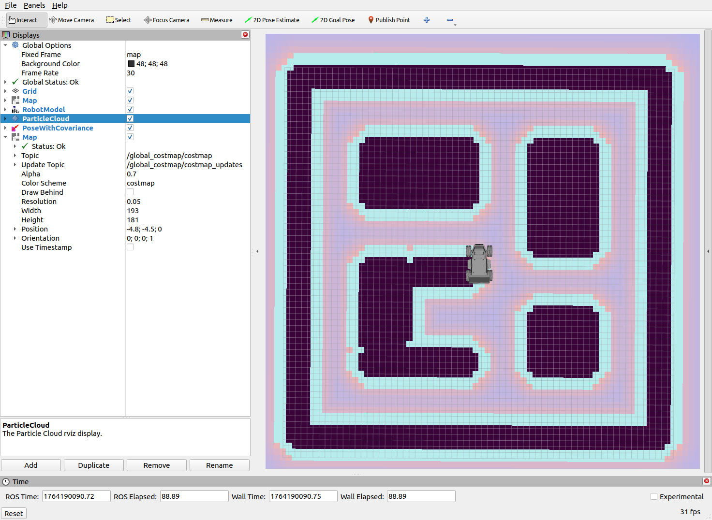
Launch the sim, launch limo_slam.launch.py, and drive LIMO in a small closed loop around a
single obstacle without ever leaving RViz2's view. Identify the moment loop closure happens by watching
the console output of async_slam_toolbox_node — what log line signals it?
Map the same lab twice: once with resolution: 0.05, once with resolution: 0.02,
keeping your driving path as close to identical as you can manage. Save both maps under different
filenames with map_saver_cli and compare the resulting .pgm file sizes and the
level of detail visible around a cluttered area like a table leg cluster.
Deliberately do a fast in-place spin partway through a mapping run, then finish the drive normally and save the map. Inspect the result in RViz2 for torn or duplicated walls near where the spin happened. Then re-run the whole drive at a slow, steady pace and compare the two saved maps side by side. Write down, in your own words, exactly what scan matching needs from consecutive scans to succeed, based on what you observed.
10.8From "where am I" to "get me there"
You now have two things LIMO didn't have this morning: a saved map of the room (map.yaml /
map.pgm) and, from Lecture 9, a way to localize itself on that map with AMCL. Neither of those,
on its own, moves the robot anywhere. Localization only answers "where am I on this map right now?"
The next question is: given a goal pose somewhere on that map, how does LIMO get there without hitting
anything?
That's the job of Nav2 — the Navigation2 stack. It is not a single program. It's a set of cooperating ROS 2 nodes, each responsible for one narrow piece of the problem, all coordinated by a Behavior Tree and brought up in a strict order by a lifecycle manager.
map_server serves the saved map. amcl keeps the robot localized on it. planner_server
computes a global path across the whole map. controller_server turns that path into real-time velocity
commands and reacts to what the sensors see right now. The behavior_server holds recovery behaviors — spin,
back up, wait — for when the robot gets stuck. bt_navigator sits above all of them, orchestrating the whole
mission through a Behavior Tree. And nav2_lifecycle_manager brings every one of these nodes up, in the
correct order, before any of it is allowed to do real work.
serves saved map"] --> AMCL["amcl
localization"] AMCL --> BTN["bt_navigator
orchestrates via Behavior Tree"] BTN --> PS["planner_server
global path"] BTN --> CS["controller_server
local velocity commands"] BTN --> BS["behavior_server
spin / backup / wait"] PS --> CS CS --> CMD["/cmd_vel"] CMD --> BASE["LIMO base"] LM["nav2_lifecycle_manager"] -.manages state of.-> MAP LM -.manages state of.-> AMCL LM -.manages state of.-> PS LM -.manages state of.-> CS LM -.manages state of.-> BS LM -.manages state of.-> BTN style BTN fill:#f4effe,stroke:#8b5cf6 style PS fill:#eef0ff,stroke:#3d4bf5 style CS fill:#eafaf3,stroke:#0e9e6e style LM fill:#fdf3e4,stroke:#c8862c
Notice the shape of that diagram: everything funnels through bt_navigator, and the lifecycle manager sits
off to the side, quietly controlling whether each server is even allowed to run. Both of those ideas — Behavior Trees and
lifecycle nodes — are new material, and they're what separate Nav2 from a simple "compute a path, follow it" script.
This part of the course lives in limo_navigation: launch/limo_localisation.launch.py (map_server +
amcl), launch/limo_navigation.launch.py (planner_server, controller_server, bt_navigator, behavior_server,
lifecycle_manager), params/bt_nav.yaml, params/planner.yaml, params/controller.yaml,
and maps/map.yaml / maps/map.pgm — the exact map you saved in Section 10.6.
Nav2 needs to know where the robot is on the map to plan and drive safely. The AMCL you built in Lecture 9 already tracks the robot's pose against a saved map — so why does the navigation stack rely on AMCL for live localization instead of just leaving the SLAM algorithm running continuously the way it did while the map was being built?
10.9Costmaps — global vs. local
A raw map only tells you where a wall is. A costmap is a grid overlaid on that same space where every cell carries a cost: free, occupied, or somewhere in between — "expensive but technically passable," like the strip of space right next to a wall. The planner and controller both make their decisions by reading costmaps, never the raw map directly.
Nav2 keeps two separate costmaps because they answer two different questions at two different rates:
| Global costmap | Local costmap | |
|---|---|---|
| Built from | The static SLAM map + inflation layer | Live /scan data (+ optional depth-camera voxel layer) |
| Coverage | The entire known map | A small rolling window centered on the robot |
| Question it answers | "What does the whole world look like?" | "What's near me right now that the map didn't know about?" |
| Reacts to | Permanent structure (walls, shelving) | Transient obstacles (a person walking by, a moved chair) |
The static map was captured once, during Section 10.4's mapping run. It has no idea a chair has since moved two metres, or that someone is currently standing in the doorway. The global costmap alone would happily plan a path straight through them. The local costmap fixes this by rebuilding a small window around the robot from live sensor data on every cycle — it's the layer that lets the LIMO react to the world as it actually is right now, not as it was when the map was saved.
Layer types
| Layer | Used in | What it contributes |
|---|---|---|
| Static layer | Global costmap | The saved SLAM map (map.yaml / map.pgm) as a base cost grid |
| Obstacle layer | Local (and sometimes global) costmap | Marks cells occupied from live /scan LiDAR returns; clears them again once the sensor sees through |
| Voxel layer | Local costmap | Optional 3D variant of the obstacle layer, built from depth-camera point clouds instead of a flat 2D LiDAR |
| Inflation layer | Global costmap | Raises cost in a radius around every obstacle so the planner prefers a safety buffer instead of grazing walls |
The LIMO's real footprint
Both costmaps need to know the robot's actual physical shape to judge whether a given cell is reachable. Guessing here is a mistake — this course uses LIMO's measured differential-drive footprint, expressed as a rectangle of four corner points in metres, robot-centered:
# costmap_common section, shared by global_costmap and local_costmap
footprint: "[[0.17,0.11],[0.17,-0.11],[-0.17,-0.11],[-0.17,0.11]]"
# equivalent to a 0.34 m x 0.22 m rectangle centred on base_linkWhere does 0.34 m × 0.22 m come from? It's built from LIMO's differential-drive kinematic parameters — wheelbase and wheel radius. You're using that number as a given fact right now to configure the costmap. In Lecture 11's hardware deep-dive you'll physically measure LIMO's real chassis with a tape measure and confirm — or correct — this exact figure against the robot in front of you. That's a deliberate ordering: simulation lets you build and test the whole navigation stack against a trusted number today; real hardware lets you go back and verify the number itself was right.
If the configured footprint is smaller than the real LIMO, Nav2 will happily plan paths that scrape shelving, door frames, or table legs the robot's actual body doesn't clear — a real collision, not a simulation artifact. If it's larger than the real robot, Nav2 becomes needlessly timid: it marks narrow doorways or aisles as unreachable even though the physical LIMO would fit through them easily, and the planner reports "no path found" for a route that's perfectly viable.
10.10The global planner
planner_server answers one question: given the robot's current pose and a goal pose, what is the shortest
safe path across the global costmap? This course uses the default NavFn planner, a Dijkstra/A*-style graph
search over the costmap grid — treating each cell as a graph node, each move between adjacent cells as an edge weighted
by that cell's cost, and searching for the lowest-total-cost route from start to goal.
The global planner's output is just a path — a sequence of poses — not a single velocity command. And critically, it doesn't recompute on every control cycle. It only runs again when it actually needs to: a new goal was sent, the global costmap changed enough to invalidate the current path, or the controller reports it can no longer make progress along the existing route. Planning across an entire map is comparatively expensive; there's no reason to pay that cost dozens of times a second when nothing about the big picture has changed.
# params/planner.yaml (excerpt)
planner_server:
ros__parameters:
planner_plugins: ["GridBased"]
GridBased:
plugin: "nav2_navfn_planner/NavfnPlanner"
tolerance: 0.5
use_astar: false
allow_unknown: true10.11The local controller — DWB
The global path tells the LIMO the route; it says nothing about how fast the wheels should spin right now, this
instant, given that a person just stepped into frame on the LiDAR. That's controller_server's job, and this
course uses its default plugin: DWB (Dynamic Window Approach).
On every control cycle, DWB does roughly this:
- Looks at the robot's current speed and its acceleration/velocity limits to build a "dynamic window" of feasible short-term velocity commands (linear + angular).
- Samples a set of candidate commands from that window.
- Forward-simulates each candidate a short distance into the future — "if I commanded this velocity for the next second, where would the robot end up?"
- Scores every simulated trajectory against a set of trajectory critics: how closely does it track the global path, how far does it stay from costmap obstacles, how much does it waste time or oscillate in place?
- Commands the single best-scoring trajectory's velocity, then repeats the whole cycle again next tick.
This is the "how do I actually move right now" answer — recomputed continuously, at a much higher frequency than the
global planner. If a person steps briefly into the local costmap, DWB's critics simply score paths that avoid them
higher; the global plan doesn't need to change at all. Only if the local controller genuinely cannot make any safe
progress along the current global path does it escalate back up to bt_navigator, which may then trigger a
recovery behavior or ask the planner for a fresh route.
# params/controller.yaml (excerpt)
controller_server:
ros__parameters:
controller_frequency: 20.0
controller_plugins: ["FollowPath"]
FollowPath:
plugin: "dwb_core::DWBLocalPlanner"
min_vel_x: 0.0
max_vel_x: 0.3
max_vel_theta: 1.0
acc_lim_x: 1.5
acc_lim_theta: 2.0
critics: ["RotateToGoal", "Oscillation", "BaseObstacle", "GoalAlign", "PathAlign", "PathDist", "GoalDist"]
Keep the rates straight: the global planner might recompute a handful of times over an entire mission. DWB, at
controller_frequency: 20.0 above, is recomputing a fresh velocity command twenty times every
second. Confusing "the plan changed" with "the robot moved" is one of the most common debugging traps in
Nav2 — see the Common Mistakes list at the end of this session.
10.12Behavior Trees & bt_navigator
So far we have two servers that each do one job well. Something still has to decide, moment to moment, which
server to call, in what order, and what to do when one of them fails. You could hard-code that as a state machine — a
fixed set of states and hand-written transitions between them. Nav2 deliberately doesn't. Instead, bt_navigator
drives the whole mission using a Behavior Tree: an XML file built out of a small set of composable node
types.
| Node type | Behaviour |
|---|---|
| Sequence | Runs its children in order; if any child fails, the whole Sequence fails immediately ("fail fast") |
| Fallback / Selector | Tries its children in order until one succeeds; only fails if all of them do |
| Decorator | Wraps a single child, modifying it — e.g. retry N times, invert its result, apply a timeout |
| Action / Condition (leaf) | The actual work — e.g. ComputePathToPose, FollowPath, IsStuck |
With a state machine, every new failure mode you want to handle means adding a new state and wiring up new transitions by hand — the graph gets tangled fast. With a Behavior Tree, a recovery behavior like "spin in place, then retry" is just another branch under a Fallback node: if the main Sequence (plan + follow path) fails, the tree simply tries the next sibling instead. Nothing about the planner or controller's code has to change. And because the whole strategy lives in one declarative XML file, swapping in a different BT — say, one that's more conservative about recoveries, or that tries a different order of fallbacks — changes the robot's navigation strategy without touching a single line of C++ or Python.
A short, illustrative snippet (not the full production tree Nav2 ships with — just enough to show the shape):
<!-- illustrative only — simplified from Nav2's default navigate_to_pose BT -->
<BehaviorTree>
<Fallback name="NavigateWithRecovery">
<Sequence name="ComputeAndFollow">
<ComputePathToPose goal="{goal}" path="{path}"/>
<FollowPath path="{path}" controller_id="FollowPath"/>
</Sequence>
<Sequence name="RecoveryBranch">
<Spin spin_dist="1.57"/>
<Wait wait_duration="2"/>
<BackUp backup_dist="0.15" backup_speed="0.05"/>
</Sequence>
</Fallback>
</BehaviorTree>
Read it the way the tree engine "ticks" it: try ComputeAndFollow first. If — and only if — that whole
Sequence fails (planner can't find a path, or the controller can't make progress), the Fallback moves on and tries
RecoveryBranch instead: spin in place to clear a bad local costmap reading, wait briefly in case a person
walks past, then back up a little to escape a tight spot. If recovery succeeds, control returns to the outer tree, which
typically re-attempts ComputeAndFollow.
Spin, BackUp, and Wait are actions served by behavior_server, not
by the controller or planner. They exist specifically for the "I'm stuck and normal navigation isn't working" case —
cheap, generic maneuvers a Behavior Tree can fall back to without any mission-specific logic.
10.13Lifecycle nodes & bringup order
Every server we've discussed — map_server, amcl, planner_server,
controller_server, bt_navigator, and behavior_server — is a managed
lifecycle node, not an ordinary ROS 2 node that starts doing work the instant its process launches. A lifecycle
node begins Unconfigured and must be explicitly walked through a sequence of transitions before it will do
anything real:
Only in the Active state does a node subscribe, publish, and act on requests. This matters for order:
amcl can't usefully activate before map_server has a map to serve; bt_navigator
can't usefully activate before planner_server and controller_server are both up. Doing all of
this by hand, node by node, every time you launch, would be tedious and error-prone.
It's a small coordinator that walks every managed node it's configured to watch through configure() then
activate(), in the right dependency order, and can walk them back down through
deactivate()/cleanup() just as automatically. In this course's
limo_navigation.launch.py, the lifecycle manager is the very last piece that brings the whole stack from
"processes running but idle" to "actually navigating."
10.14Bringing the full stack up
Four terminals, in this order — the same pattern you've used since Lecture 8, extended with the two navigation launch files:
# terminal 1 — build once if you've changed anything
colcon build
source install/setup.bash
# terminal 2 — simulated LIMO in Gazebo
ros2 launch limo_gazebosim limo_gazebo_diff.launch.py
# terminal 3 — map_server + amcl
ros2 launch limo_navigation limo_localisation.launch.py
# terminal 4 — planner_server, controller_server, bt_navigator,
# behavior_server, and the lifecycle_manager that
# brings all of the above to Active
ros2 launch limo_navigation limo_navigation.launch.py
# terminal 5 — visualize and interact
rviz2Once everything reports active, set the LIMO's initial pose in RViz (2D Pose Estimate, as in Lecture 9) and give the AMCL particle cloud a moment to converge before sending any goal.
Inspecting the running stack
/navigate_to_pose showing up in ros2 action list is your single best "is Nav2 actually up"
signal — it's the action bt_navigator exposes and the one every goal-sending method in the next section
ultimately calls. For live parameter tuning without restarting anything, ros2 run rqt_reconfigure
rqt_reconfigure lets you nudge DWB or costmap parameters and watch the effect immediately in RViz.
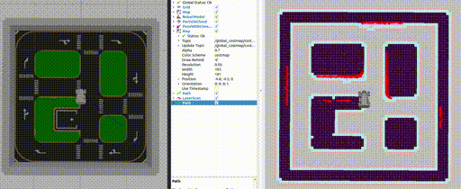
10.15Sending a goal, three ways
Every one of these three methods ends up calling the same thing under the hood: the /navigate_to_pose
action server exposed by bt_navigator. They differ only in how the goal pose gets constructed and sent.
1. RViz2's Nav2 Goal tool
The fastest way to test interactively. Click the Nav2 Goal button in RViz's toolbar, then click-and-drag on the map: the click point sets position, the drag direction sets the goal orientation. Release, and Nav2 does the rest — plans, activates the controller, and the LIMO starts moving.
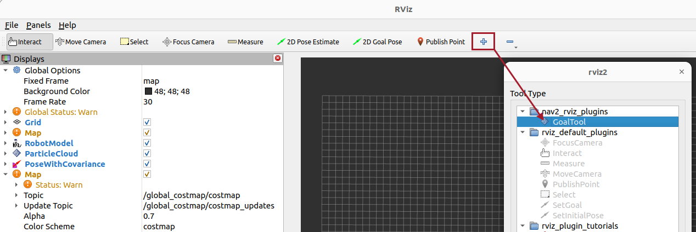
2. Raw CLI action call
Useful for scripting or for testing without RViz open at all:
ros2 action send_goal /navigate_to_pose nav2_msgs/action/NavigateToPose \
"pose: {header: {frame_id: 'map'}, pose: {position: {x: 1.0, y: 0.5, z: 0.0}, orientation: {w: 1.0}}}"This blocks in the terminal and streams feedback as the LIMO drives — handy for a quick sanity check that the action server responds at all, before writing any Python around it.
3. Programmatically — nav2_simple_commander
For anything beyond a one-off test — waypoint missions, timeouts, goal changes mid-flight — this course uses Nav2's
BasicNavigator helper class, the same pattern as the real
example_nav_to_pose.py node in KV6022_assessment:
from geometry_msgs.msg import PoseStamped
from nav2_simple_commander.robot_navigator import BasicNavigator, TaskResult
import rclpy
from rclpy.duration import Duration
def main():
rclpy.init()
navigator = BasicNavigator()
# Wait until every Nav2 server is active before sending anything
navigator.waitUntilNav2Active()
# Build the goal — always in the 'map' frame
goal_pose = PoseStamped()
goal_pose.header.frame_id = 'map'
goal_pose.header.stamp = navigator.get_clock().now().to_msg()
goal_pose.pose.position.x = 1.0
goal_pose.pose.position.y = 0.5
goal_pose.pose.orientation.w = 1.0
navigator.goToPose(goal_pose)
# Poll for feedback while the goal is in progress
while not navigator.isTaskComplete():
feedback = navigator.getFeedback()
if feedback:
eta = Duration.from_msg(feedback.estimated_time_remaining).nanoseconds / 1e9
print(f'ETA: {eta:.0f} s')
# Timeout-based cancellation
if Duration.from_msg(feedback.navigation_time) > Duration(seconds=60.0):
navigator.cancelTask()
result = navigator.getResult()
if result == TaskResult.SUCCEEDED:
print('Goal succeeded!')
elif result == TaskResult.CANCELED:
print('Goal was canceled!')
elif result == TaskResult.FAILED:
print('Goal failed!')
rclpy.shutdown()
if __name__ == '__main__':
main()
KV6022_assessment/KV6022_assessment/example_nav_to_pose.py follows exactly this shape, plus one extra
step: before sending any goal it optionally reads the LIMO's current pose via a tf2_ros lookup from
map to base_footprint and feeds that into navigator.setInitialPose(). It also
demonstrates goal preemption — calling navigator.goToPose() again with a new pose while
a previous goal is still in progress simply replaces it, no need to cancel first.
Calling goToPose() before waitUntilNav2Active() returns is a common source of "the goal
just silently disappears" bugs. If bt_navigator (or any node it depends on) hasn't finished its
lifecycle activation yet, the action server may not exist, or may reject the goal outright. Always wait for it first.
With the full stack up (Section 10.14) and the LIMO localized, send it to a goal 1 metre in front of its starting position using RViz's Nav2 Goal tool. Watch the global path appear, then watch the local costmap update as the robot moves. Confirm ros2 action list shows /navigate_to_pose before you start.
Send the same goal using the raw ros2 action send_goal CLI command from Section 10.15. Then edit params/planner.yaml to set use_astar: true, relaunch, and compare the resulting global path to the NavFn-default path. Which is smoother? Which took longer to compute?
Write a Python node modelled on the BasicNavigator example above that sends the LIMO to three goal poses in sequence (don't use followWaypoints() — call goToPose() three times, waiting for each isTaskComplete() in turn). Add a 45-second timeout per goal that calls cancelTask() and moves on to the next pose if exceeded. Print the final TaskResult for each leg.
10.16The final mission, stated plainly
Walk back through the lectures so far and each one handed you exactly one working piece. Lecture 1
got LIMO booted and simulated. Lecture 2 introduced the ROS 2 graph. Lecture 3 gave you drive modes and a
development loop. Lecture 4 built the URDF body. Lecture 5 put a rigorous TF tree underneath all of it.
Lecture 6 wired Gazebo and ros2_control together. Lecture 7 added LiDAR, IMU, and camera with
obstacle avoidance. Lecture 8 taught LIMO to see — HSV colour thresholds, contours, and depth-based
localization of what the camera finds. Lecture 9 fused noisy sensors into a clean estimate of where LIMO
actually is, and turned that into map-based localization with AMCL. Sections 10.1-10.15 of today gave LIMO a
real map of its own and the full Nav2 stack to plan and drive across it.
None of that, on its own, produces a robot that does something useful end to end. This closing part of the session does. And because it runs entirely in Gazebo, think of it as the dress rehearsal for Lecture 14's real-hardware capstone — everything you get working here on the simulated LIMO is exactly what you'll be asked to reproduce on the physical robot once Lectures 11-13 have taken you through its real electronics, and through building a second ROS 2 robot completely from parts. The mission is stated in one sentence:
Send LIMO out to autonomously survey an arena, visiting every corner of it either by a fixed waypoint route
or by frontier exploration, continuously watching its camera for road defects ("potholes"), converting every
detection into a real-world position in the map frame, filtering out repeat sightings of the
same defect, and finishing with a clean, logged, visualized list of what it found and where.
That is not a new skill. It is this session's Nav2 driving coverage, Lecture 8's OpenCV
detector watching the camera, Lecture 5 and 8's depth+TF pattern turning a pixel into a map coordinate, and a
small piece of new logic — de-duplication — that decides whether a detection is something LIMO has already
logged. The whole exercise runs against the potholes / potholes_simple Gazebo worlds
you first saw back in Lecture 6, now dressed up as a proper "assessment" arena — see assessment.png.
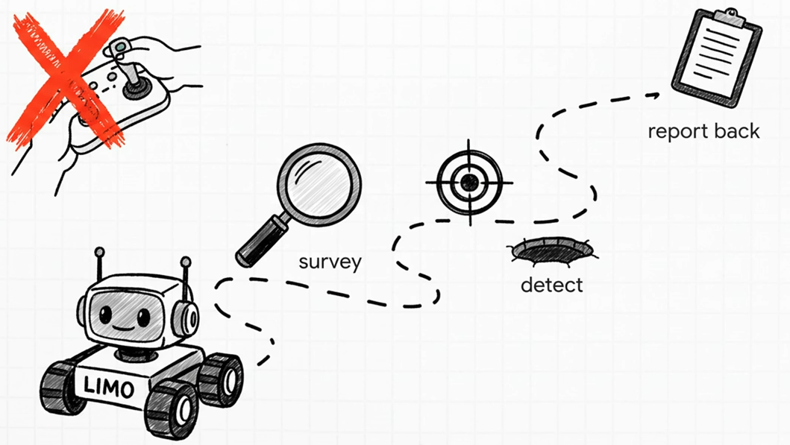
Here is the integrated pipeline you are building now, top to bottom:
where am I on the map?"] --> B["Nav2
costmaps + planner + controller"] B --> C{"Coverage strategy"} C -->|"nav2_waypoint_follower"| D["Ordered waypoint list
GUI-clicked or scripted"] C -->|"explore_lite"| E["Frontier-driven
autonomous exploration"] D --> F["LIMO drives the arena"] E --> F F --> G["example_opencv_detector.py
HSV / contour defect detection"] G --> H{"Defect in the frame?"} H -->|"no"| F H -->|"yes"| I["Depth + TF
pixel to map-frame position"] I --> J{"Within ~0.3-0.5 m of a
defect already logged?"} J -->|"yes — duplicate"| F J -->|"no — new defect"| K["Log defect + publish Marker"] K --> F F --> L{"Frontiers / waypoints
exhausted?"} L -->|"no"| F L -->|"yes"| M["Mission complete —
final defect report"] style A fill:#eef0ff,stroke:#3d4bf5 style B fill:#eef0ff,stroke:#3d4bf5 style G fill:#f4effe,stroke:#8b5cf6 style I fill:#f4effe,stroke:#8b5cf6 style K fill:#eafaf3,stroke:#0e9e6e style M fill:#3d4bf5,color:#fff
A mission like this cannot be faked by wiring one node cleverly. It genuinely needs correct localization (or the defect positions are garbage), correct navigation (or LIMO never reaches the defects), correct perception (or nothing is ever detected), and correct bookkeeping (or the same pothole gets reported five times). Every lecture you sat through was a prerequisite for exactly one part of this pipeline.
10.17Multi-goal waypoint following, the GUI way
The simplest way to get LIMO covering a fixed route is waypoint following: a list of poses,
visited one after another, no manual driving required after you set them. Nav2 ships a purpose-built action
server for exactly this — nav2_waypoint_follower — and it slots into your existing launch file
as just another lifecycle-managed node next to the planner, the controller, and the recovery server.
Extend limo_navigation.launch.py by adding the waypoint follower to the list of nodes handed to
nav2_lifecycle_manager, alongside the nodes you already brought up earlier in this session:
waypoint_follower_node = Node(
package='nav2_waypoint_follower',
executable='waypoint_follower',
name='waypoint_follower',
output='screen',
parameters=[nav2_params_file]
)
lifecycle_manager_node = Node(
package='nav2_lifecycle_manager',
executable='lifecycle_manager',
name='lifecycle_manager_navigation',
output='screen',
parameters=[{
'autostart': True,
'node_names': [
'controller_server',
'planner_server',
'behavior_server',
'bt_navigator',
'waypoint_follower', # <-- added for the capstone
]
}]
)
With that in place, launch the assessment stack, open RViz2, and switch to the Navigation2
panel. Select its waypoint-mode tool, then click a sequence of poses directly on the map — each click drops a
new goal, drawn as an arrow, and the whole sequence renders as a visualization_msgs/MarkerArray
so you can see the planned route before committing to it.
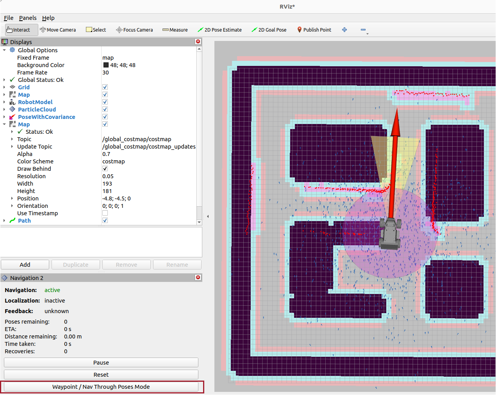
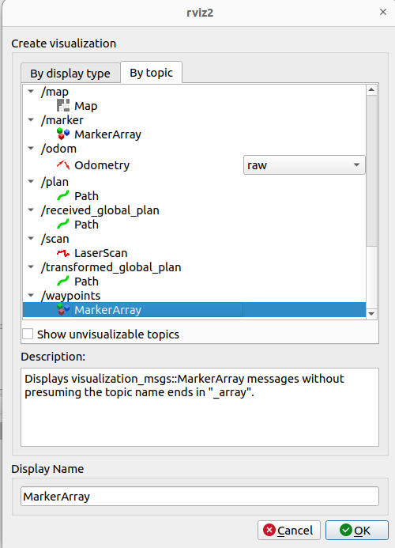
Once the route looks right, press Start Waypoint Following. LIMO plans and drives to the first pose, then the second, and so on, using exactly the same planner/controller/recovery stack from earlier in this session — waypoint following adds no new motion logic, it is simply Nav2 driven by a list instead of a single goal.
nav2_waypoint_follower is an action server that loops over your pose list, sends each one to
bt_navigator's NavigateToPose action (the same action a single goToPose()
call uses), waits for success, and moves to the next. It can also fire "waypoint task executors" at each
stop — useful later if you want LIMO to pause and take a closer look at a defect before continuing.
10.18Multi-goal waypoint following, programmatically
Clicking in RViz2 is great for testing a route once, but a repeatable, gradeable mission needs the waypoints
defined in code. This course's own KV6022_assessment package ships exactly that:
example_waypoint_follower.py, built on the same nav2_simple_commander
BasicNavigator class you used earlier in this session for single-goal navigation — the only
difference is which method you call.
#!/usr/bin/env python3
import rclpy
from rclpy.duration import Duration
from geometry_msgs.msg import PoseStamped
from nav2_simple_commander.robot_navigator import BasicNavigator, TaskResult
def make_pose(navigator, x, y, yaw_z=1.0, yaw_w=0.0):
pose = PoseStamped()
pose.header.frame_id = 'map'
pose.header.stamp = navigator.get_clock().now().to_msg()
pose.pose.position.x = x
pose.pose.position.y = y
pose.pose.orientation.z = yaw_z
pose.pose.orientation.w = yaw_w
return pose
def main():
rclpy.init()
navigator = BasicNavigator()
navigator.waitUntilNav2Active()
waypoints = [
make_pose(navigator, 1.20, 0.40),
make_pose(navigator, 2.05, -0.85),
make_pose(navigator, 3.10, 0.10),
make_pose(navigator, 1.60, 1.75),
]
navigator.navigateThroughPoses(waypoints)
while not navigator.isTaskComplete():
feedback = navigator.getFeedback()
if feedback:
navigator.get_logger().info(
f'Distance remaining: {feedback.distance_remaining:.2f} m')
result = navigator.getResult()
if result == TaskResult.SUCCEEDED:
navigator.get_logger().info('Waypoint mission complete.')
elif result == TaskResult.CANCELED:
navigator.get_logger().warn('Mission was canceled.')
else:
navigator.get_logger().error('Mission failed.')
rclpy.shutdown()
if __name__ == '__main__':
main()Run it against a live navigation stack with:
navigateThroughPoses(pose_list) hands the whole list to bt_navigator at once, which
lets Nav2's behaviour tree replan smoothly across the sequence. The alternative — calling goToPose()
repeatedly in a loop, waiting for each one to finish before sending the next — works too, and is what you'd
reach for if you needed to run custom logic (like checking the detector) between each stop.
Getting real coordinates for your waypoint list
Hard-coding x, y pairs only works once you know what they should be. Two ways to find real
coordinates in the assessment map:
If a waypoint-publishing tool is running (for example, one built from RViz2's clicked-point publisher), read the poses straight off the topic:
ros2 topic echo /waypoints --field pose.pose.positionTeleop LIMO to the exact spot you want, then ask TF where base_link currently sits relative to map:
ros2 run tf2_ros tf2_echo map base_linkRead off the translation, drop it straight into your make_pose(x, y) calls.
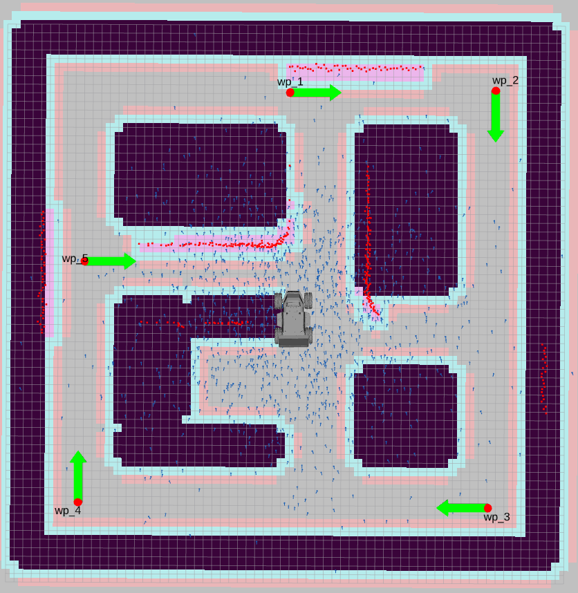
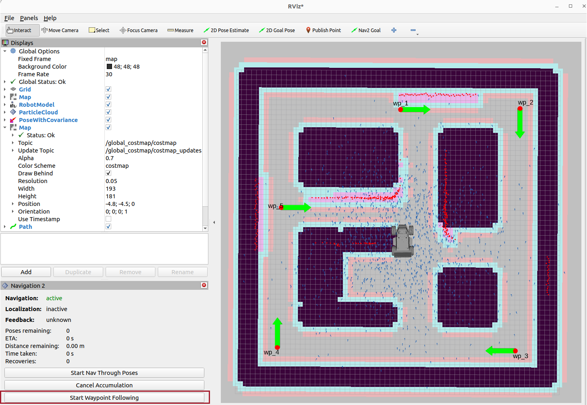
navigateThroughPoses() route from example_waypoint_follower.py.
Every PoseStamped in the list needs header.frame_id = 'map'. Set it to
base_link or leave it blank and Nav2 will either reject the goal outright or, worse, interpret
the coordinates relative to wherever LIMO happens to be standing at that instant — a route that looked
correct on paper will send LIMO somewhere completely different.
10.19Autonomous frontier exploration
Waypoints require you to already know the arena's layout well enough to plan a route. When you don't — or when you want LIMO to genuinely explore on its own — the answer is frontier exploration.
On any occupancy grid, a frontier is a boundary cell that sits between explored free space and unknown space (the grey, un-mapped region SLAM hasn't reached yet). As LIMO maps more of the arena, frontiers shrink and shift outward. When there are no frontiers left, there is no unknown space left to reach — the map is complete.
The m-explore-ros2 package provides explore_lite, a node that automates the whole
loop: detect the current frontiers on the live occupancy grid, score each one with a "gain" formula that
weighs frontier size against travel distance, send the best-scoring frontier to Nav2 as a normal navigation
goal, wait for it to be reached (or to fail), and repeat — with zero manual driving.
Setting it up
cd ~/limo_ws/src
git clone https://github.com/robo-friends/m-explore-ros2.git
cd ~/limo_ws
colcon build --packages-select explore_lite
source install/setup.bashKey parameters to tune in explore.yaml:
| Parameter | What it controls |
|---|---|
min_frontier_size | Smallest frontier worth sending LIMO to — filters out tiny noise-driven gaps so LIMO doesn't chase them |
planner_frequency | How often explore_lite re-evaluates frontiers and picks a new target |
gain_scale | Balance between frontier-size reward and distance cost — higher favors big unexplored regions even if they're farther away |
progress_timeout | How long LIMO can go without measurable progress before that frontier is abandoned as unreachable |
Then bring up SLAM, Nav2, and exploration together — for example against the simulation_table.world arena:
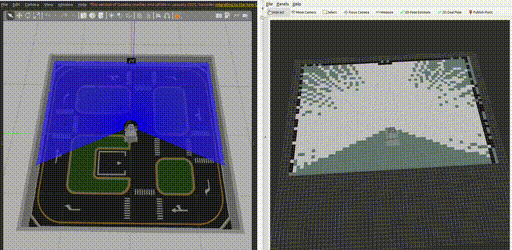
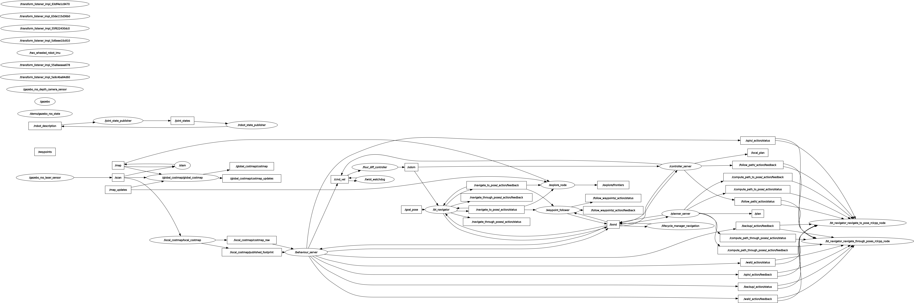
explore_lite sits above Nav2 and feeds it goals derived from SLAM's live occupancy grid.
explore_lite sends Nav2 a new goal every time it re-evaluates frontiers. If you also click a
goal in RViz2 while exploration is running, the two will keep overriding each other — LIMO lurches between
destinations and never actually completes either one. Pause or stop exploration before sending any manual
goal, and don't run waypoint following and frontier exploration at the same time; they are two different
answers to "how do I cover the arena," not a pair meant to run together.
10.20The capstone mission package
This course's real assessment package, KV6022_assessment, bundles everything the mission needs:
a tuned nav2_params.yaml, a pre-built occupancy map, and a set of example nodes you extend rather
than write from scratch.
KV6022_assessment/
├── params/
│ └── nav2_params.yaml # Nav2 tuned for the assessment arena
├── maps/
│ └── assessment_map.yaml # pre-built map, ~20 mm/pixel resolution
├── KV6022_assessment/
│ ├── example_opencv_detector.py # Lecture 8-style HSV/contour defect detector
│ ├── example_waypoint_follower.py # navigateThroughPoses() pattern
│ ├── example_nav_to_pose.py # single-goal BasicNavigator pattern
│ └── example_nav_through_poses.py # multi-goal BasicNavigator pattern
└── launch/
└── limo_navigation.launch.py # localization + Nav2 against the assessment mapThe assessment map ships at roughly 20 mm/pixel, noticeably finer than the 0.05 m (50 mm) grid used in Section 10.3. Defect detection needs LIMO's localized position to be accurate to a few centimetres — a coarse map is fine for "don't hit the wall" navigation, but it isn't precise enough to place a defect marker correctly on the map.
Install Nav2 if it isn't already present, then bring the whole assessment stack up in order:
limo_gazebo_assessment.launch.py spawns LIMO in the assessment world specifically — not the
generic world you've used in earlier lectures — and KV6022_assessment's own
limo_navigation.launch.py loads localization and Nav2 against the assessment map, not whatever
default map file you may already have on disk.
The assessment arena is a different world with a different, finer-resolution map. If you launch the
generic limo_navigation.launch.py from earlier in this session against the assessment world,
AMCL will be localizing LIMO against a map that doesn't match what the sensors are seeing — particle
filter convergence gets unstable and every downstream position (including every logged defect) becomes
unreliable. Always launch the assessment-specific files for the assessment world.
10.21Wiring the full pipeline together
Coverage (waypoints or exploration) and detection are two independent nodes that need to run at the same time, not in sequence. Coverage keeps LIMO moving through the arena; detection watches the camera on every frame regardless of where LIMO currently is. What ties them together is what happens after a detection fires: localizing it into the map, checking whether it's new, and logging it if so.
Detection → map-frame position (Lecture 5 + 8's pattern)
This is exactly the object_localisation.py-style pattern from Lecture 8: take the pixel
coordinates of a detected defect, look up the corresponding depth value, project that into a 3D point in the
camera's optical frame, then use TF2 to transform that point into the map frame.
from tf2_ros import Buffer, TransformListener
from tf2_geometry_msgs import do_transform_point
from geometry_msgs.msg import PointStamped
class DefectLocalizer:
def __init__(self, node):
self.node = node
self.tf_buffer = Buffer()
self.tf_listener = TransformListener(self.tf_buffer, node)
def pixel_to_map(self, u, v, depth, camera_info, source_frame='camera_link'):
# pixel + depth -> point in the camera optical frame (Lecture 8 pattern)
x = (u - camera_info.k[2]) * depth / camera_info.k[0]
y = (v - camera_info.k[5]) * depth / camera_info.k[4]
point = PointStamped()
point.header.frame_id = source_frame
point.header.stamp = self.node.get_clock().now().to_msg()
point.point.x, point.point.y, point.point.z = x, y, depth
transform = self.tf_buffer.lookup_transform(
'map', source_frame, rclpy.time.Time())
return do_transform_point(point, transform) # PointStamped in 'map'De-duplication (Lecture 8's object_counter.py pattern)
A defect sitting in LIMO's field of view for several consecutive frames — or seen again on a later pass — must not be logged as multiple separate defects. Before logging, check the new point against everything already logged; if it's within a small proximity threshold of an existing entry, it's the same one, seen again.
import math
DEDUP_RADIUS_M = 0.4 # anything closer than this is "the same defect"
class DefectLog:
def __init__(self):
self.defects = [] # list of (x, y) map-frame positions
def maybe_log(self, x, y):
for (ex, ey) in self.defects:
if math.hypot(x - ex, y - ey) < DEDUP_RADIUS_M:
return False # duplicate — already counted
self.defects.append((x, y))
return True # new defect, loggedPublishing the final report as Markers
from visualization_msgs.msg import Marker, MarkerArray
def build_marker_array(defects):
array = MarkerArray()
for i, (x, y) in enumerate(defects):
m = Marker()
m.header.frame_id = 'map'
m.ns = 'defects'
m.id = i
m.type = Marker.SPHERE
m.action = Marker.ADD
m.pose.position.x, m.pose.position.y = x, y
m.scale.x = m.scale.y = m.scale.z = 0.25
m.color.r, m.color.a = 1.0, 1.0
array.markers.append(m)
return array
In practice this all lives inside the detector node's image callback: on every frame that contains a
candidate defect, call pixel_to_map(), hand the result to maybe_log(), and if it
returns True, publish an updated MarkerArray. Coverage (waypoint follower or
explore_lite) runs completely independently in its own node — the two only interact through
shared TF and the shared costmap, never through direct calls.
Nothing about detection changes how Nav2 sends goals or builds its costmap — that machinery is exactly what you configured earlier in this session. The capstone doesn't add new navigation logic; it adds a second, independent consumer (the detector) of the localization and TF data that navigation was already producing.
10.22Grading your own mission run
Before calling a run finished, check it against the same criteria an instructor — or a self-check script — would use to grade it.
| Criterion | What "pass" looks like |
|---|---|
| Full-arena coverage | No unexplored/unvisited region of the arena was left uninspected |
| Detection accuracy | Every real defect in the arena was detected exactly once — no misses |
| De-duplication | No defect was logged more than once (no duplicate counts from repeated sightings) |
| Collision-free | Zero collisions with walls or obstacles during the entire run |
| Mission time | Completed in a reasonable total time — not stalled, not looping indefinitely |
| Final report | A visualized (Markers) and/or logged list of defect positions is produced at the end |
Run the full assessment stack end to end (Section 10.20), let it finish, then answer each rubric row honestly against your own run: did the coverage strategy you chose actually reach every corner of the arena? Compare the number of Markers published against the number of defects you can count by eye in Gazebo. If they don't match, is it a detector miss, a localization error, or a de-duplication threshold that's too tight or too loose?
Swap the coverage strategy on your mission: if you ran it with the scripted waypoint list, re-run the same
arena with explore_lite instead (Section 10.19), and vice versa. Compare the two runs against
the rubric table — which one finished faster? Which one found more defects? Does the fixed waypoint route
ever miss a corner that frontier exploration reaches automatically?
Add a "waypoint task executor" to example_waypoint_follower.py so LIMO pauses for two seconds
at each waypoint and lets the detector take a clean, non-blurred look before continuing. Then tighten or
loosen DEDUP_RADIUS_M from Section 10.21 and re-run the same mission twice — plot how the final
defect count changes as the threshold moves from 0.2 m to 0.6 m, and pick the value that best matches the
real number of defects placed in the arena.
Build and save a brand-new occupancy grid map of a room you haven't mapped before in this course (a different corner of the simulated world, or a reconfigured Gazebo world if your instructor provides one). Without retuning any Nav2 or AMCL parameters from their current values, run the full waypoint-following-then-frontier-exploration mission pipeline cold in that new map. Log everywhere it behaves differently than it did in the room you tuned it on, and for each difference, argue whether the fix belongs in map-specific parameters, in more general tuning, or in the mission code itself.
10.23Summary, checkpoint & glossary
This session took LIMO from "no map, no known pose" all the way to a fully autonomous mission: SLAM built a map from nothing (Sections 10.1-10.7), Nav2 turned that map plus a goal pose into safe, obstacle-aware motion (10.8-10.15), and the final third fused waypoint or frontier coverage with the Lecture 8 detector, TF localization, and de-duplication into one integrated survey-and-report mission (10.16-10.22). Every one of those pieces ran entirely in Gazebo.
You've now completed the simulated half of this course. Lectures 11 through 14 take everything you just built onto real hardware: Lecture 11 is a deep, hands-on dive into LIMO's actual electronics — its chassis and four drive modules, onboard computer, LiDAR, depth camera, IMU, and battery/power system — verifying, on the physical robot, several numbers (like that 0.34 m × 0.22 m footprint from Section 10.9) you've so far only trusted in simulation. Lectures 12-14 then have you design and build a second ROS 2 robot completely from raw components, applying the exact same SLAM-Nav2-mission pattern you just built here to hardware you assembled with your own hands.
- I can explain why SLAM is a chicken-and-egg problem and how incremental scan-matching breaks the deadlock.
- I know why this course uses
async_slam_toolbox_noderather than the synchronous variant, and roughly how Cartographer differs. - I can describe what
resolution,max_laser_range, and theminimum_travel_*parameters inslam.yamleach control. - I've driven a full SLAM mapping run in Gazebo, watched the occupancy grid fill in live in RViz2, and saved the result with
map_saver_cli. - I can explain who owns the
map→odomtransform during SLAM versus during AMCL, and why Nav2 doesn't care which one is running. - I know what makes a map "good" — slow driving, deliberate loop closure, and full-space coverage — and can point to a torn wall as evidence of the opposite.
- I can explain the difference between the global and local costmap, including which sensor data feeds each one.
- I can explain why an inaccurate footprint causes either real collisions or unnecessarily blocked paths.
- I can describe what the global planner computes versus what the local controller (DWB) computes, and how often each runs.
- I can explain why a Behavior Tree is more flexible than a hand-written state machine for composing recovery behaviors.
- I know the lifecycle states a managed node passes through and what
nav2_lifecycle_managerautomates. - I can send a navigation goal three different ways: RViz, the CLI action call, and
BasicNavigator. - I can add
nav2_waypoint_followerto a lifecycle-managed launch file and drive a route from RViz2's Navigation2 panel. - I can write a script using
BasicNavigator.navigateThroughPoses()with a real coordinate list captured fromtf2_echoor a waypoints topic. - I can explain what a frontier is and set up
explore_liteto autonomously map an arena. - I can bring up the full
KV6022_assessmentstack end to end: assessment world, assessment map, detector, and coverage strategy together. - I can localize a camera detection into the
mapframe and de-duplicate repeat sightings of the same defect. - I can grade a mission run against coverage, detection accuracy, duplication, collisions, time, and final report.
A few genuine directions worth knowing about even though they're outside this course's scheduled scope:
multi-robot fleets — everything here generalizes to more than one LIMO by namespacing each
robot's topics (/limo1/scan, /limo2/scan, …) and TF prefixes under a shared
map frame; a manipulator arm + MoveIt2 — some LIMO variants support an optional
6-DOF arm add-on (not standard equipment on every unit), which adds motion planning for the arm itself on top
of everything Nav2 already gives you for base motion; and Docker + CI — packaging this whole
stack into a pinned-ROS-2-Humble Docker image with a smoke-test CI pipeline is the difference between "works
on my machine" and something you could hand to someone else or deploy to a fleet with confidence.
Glossary
- SLAM
- Simultaneous Localization And Mapping — building a map and estimating the robot's pose within it at the same time, from a standing start of neither.
- Scan matching
- Aligning a new LiDAR scan against the map (or a previous scan) built so far to estimate the robot's motion since the last update.
- Loop closure
- Recognizing that the robot has returned to a previously-mapped area, triggering a global correction of accumulated drift across the whole map.
- Pose graph
- The graph structure SLAM maintains internally — nodes are robot poses at each scan, edges are the motion and loop-closure constraints between them — optimized to keep the map globally consistent.
- Occupancy grid
- The 2D raster representation of the map: white cells are free space, black cells are obstacles, gray cells are unexplored.
- map_saver_cli
- The Nav2 command-line tool that snapshots the current live map into a
.pgm/.yamlfile pair for later reuse. - Costmap
- A grid overlaid on the map where each cell holds a traversal cost, used by the planner and controller instead of the raw map.
- Inflation layer
- A costmap layer that raises cost in a radius around obstacles so the planner keeps a safety margin rather than grazing walls.
- DWB (Dynamic Window Approach)
- Nav2's default local controller plugin: samples feasible velocity commands, forward-simulates them briefly, and scores them with trajectory critics.
- Behavior Tree
- A tree of Sequence, Fallback, Decorator, and Action/Condition nodes used by
bt_navigatorto orchestrate navigation and compose recovery behaviors declaratively. - Lifecycle node
- A managed ROS 2 node that must be explicitly configured and activated (Unconfigured → Inactive → Active) before it does real work.
- Recovery behavior
- A generic fallback action — Spin, BackUp, Wait — served by
behavior_serverand triggered by the Behavior Tree when normal navigation stalls. - BasicNavigator
- The
nav2_simple_commanderPython helper class that wraps the/navigate_to_poseaction for scripted goal-sending, feedback polling, and cancellation. - Frontier
- A boundary cell on an occupancy grid between explored free space and unknown, unmapped space — the target of autonomous exploration.
- Waypoint follower
- A Nav2 action server (
nav2_waypoint_follower) that drives a robot through an ordered list of poses, oneNavigateToPosecall at a time. - De-duplication
- Checking a new detection's position against previously logged detections within a proximity threshold, so a repeated sighting of the same real-world object isn't counted twice.
- Mission rubric
- An explicit, checkable set of pass/fail criteria for grading an autonomous run — coverage, accuracy, duplication, collisions, time, and reporting.
navigateThroughPoses()- A
BasicNavigatormethod that sends a whole list ofPoseStampedgoals to Nav2's behaviour tree at once, letting it plan and replan smoothly across the full sequence.
Common mistakes
- Driving too fast during SLAM. Fast translation or fast in-place spins shrink the overlap between consecutive scans, causing scan-matching failures that tear or duplicate walls in the map.
- Never closing the loop. Ending the mapping drive without deliberately revisiting the starting area skips the loop-closure correction, leaving accumulated drift permanently baked into the saved map.
- Saving the map too early. Calling
map_saver_clibefore every relevant area has resolved out of gray leaves permanent unknown regions that later block or mis-inform Nav2's costmap. - Losing track of the saved map files. Forgetting to move
map.pgm/map.yamlinto the specific package'smaps/folder that later launch files (AMCL, Nav2) expect them in, causing "map not found" failures. - Configuring the costmap footprint to a size that doesn't match the physical LIMO (0.34 m × 0.22 m) — too small causes real collisions, too large blocks valid narrow paths.
- Forgetting to launch or configure
nav2_lifecycle_manager, leaving every Nav2 server stuck inInactiveand no goal ever getting accepted. - Sending a goal before
waitUntilNav2Active()returns (or before RViz shows the servers as active) — the goal is silently dropped or rejected. - Tuning DWB velocity/acceleration limits for one LIMO drive mode (e.g. differential) and reusing the same params unchanged on a different drive mode, where the limits no longer match reality.
- Confusing the global planner's occasional recompute rate with the local controller's much higher, continuous rate — they are not the same clock, and debugging "jerky motion" versus "bad overall route" requires looking at the right one.
- Defining waypoints with the wrong (or missing)
header.frame_id, so Nav2 either rejects the goal or interprets coordinates relative to the robot's current pose instead of the map. - Running
explore_liteand sending a manually-clicked RViz2 goal at the same time — the two fight over control and LIMO never completes either one. - Launching an earlier, generic map and navigation launch file against the assessment world instead of
KV6022_assessment's own assessment-specific map and launch files, breaking AMCL convergence. - Declaring the mission "done" once LIMO stops moving, without checking that every corner of the arena was actually covered — a stalled exploration or an incomplete waypoint list can quietly finish early.